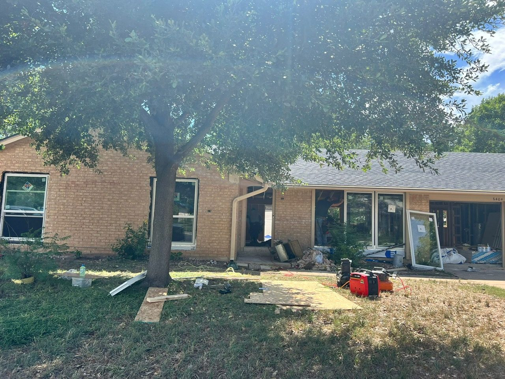
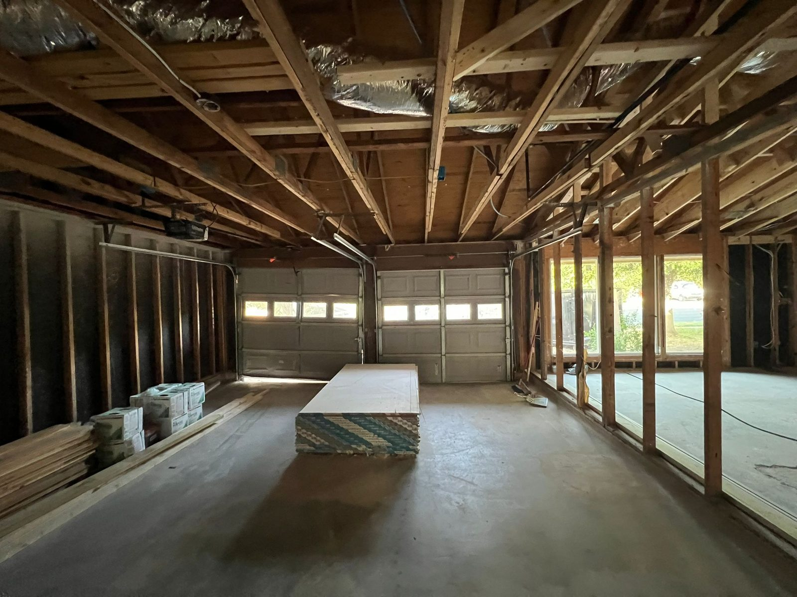
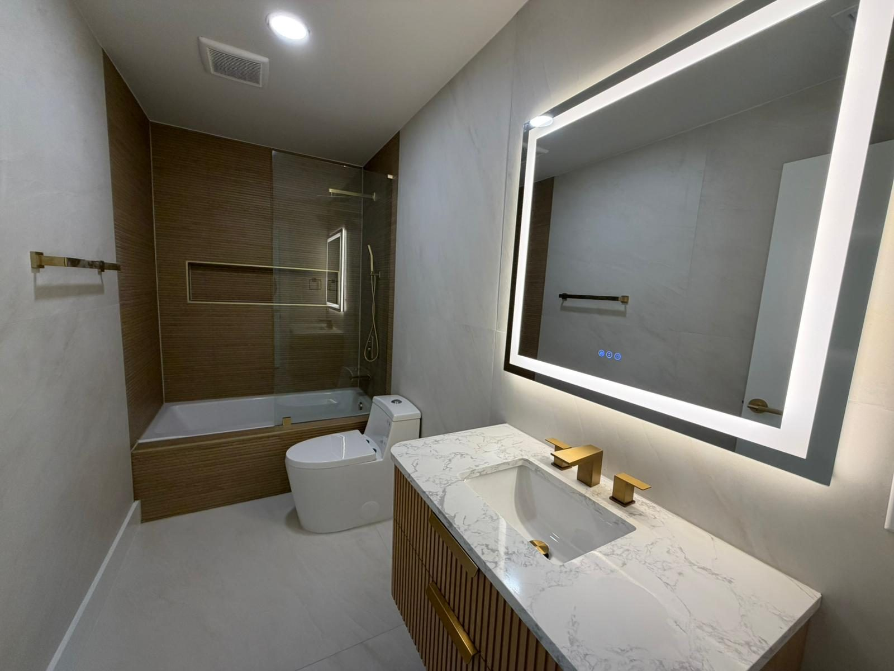
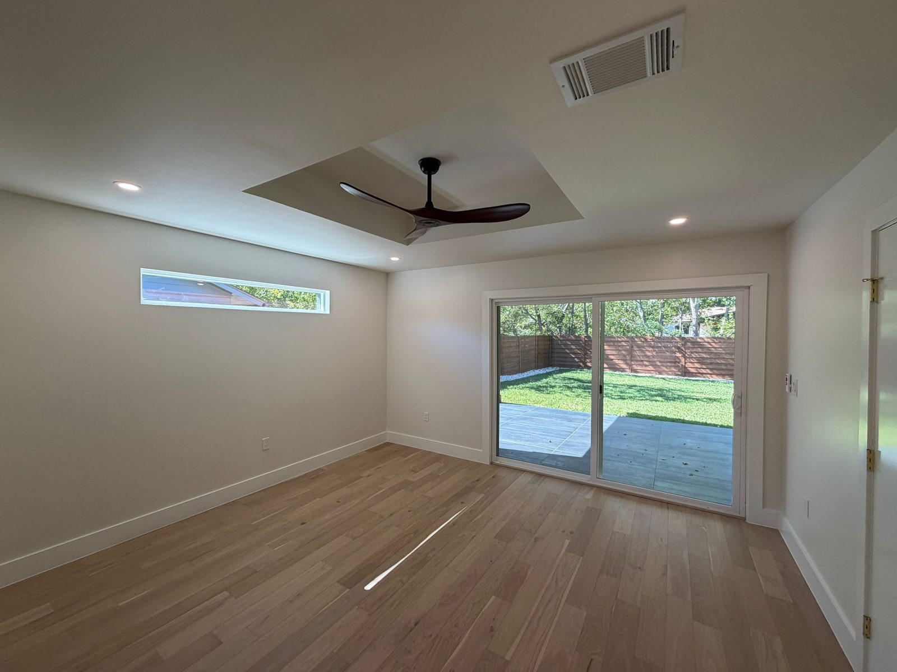
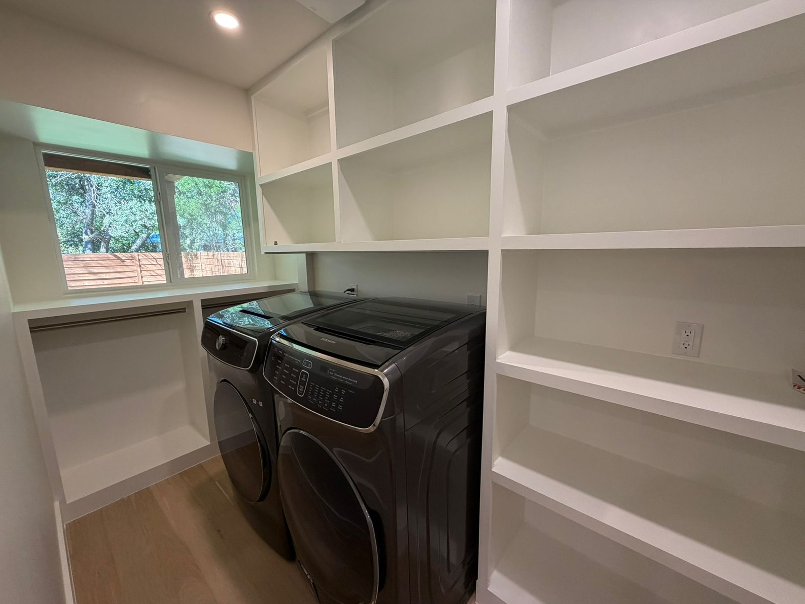

6404 Blarwood Drive, Austin TX
A full residential transformation from dated property to contemporary home.
Project Overview
Before. Construction. Completion.
This project demonstrates ABCO’s ability to take a property through a full redevelopment journey: acquisition, strip-out, structural reconfiguration, design upgrades, finishing and market repositioning.
We intentionally do not publish project margins, purchase economics or contractor costings publicly. Detailed financials can be discussed privately with appropriate partners.
The Journey
Transformation Gallery








Scope
Redevelopment scope
Acquisition
Identified a dated Austin home with strong repositioning potential.
Construction
Undertook extensive internal reconfiguration, reframing and updated openings.
Specification
Introduced modern bathrooms, upgraded finishes, improved functionality and a cleaner contemporary layout.
Repositioning
Completed the transformation into a modern family home aligned with market demand.